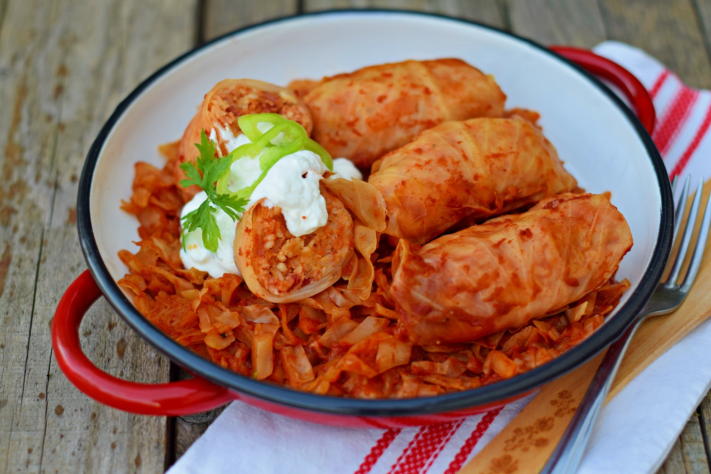

Gulyás

A gulyás az egyik leghíresebb az összes magyar fogás közül, ennek ellenére a mai napig nem ismeri mindenki e hazai különlegesség eredetét.
Halászlé
A halászlé a gulyáshoz hasonlóan egy igazi magyar étel, és ugyan úgy bográcsban érdemes elkészíteni a valódi ízek érdekében.
Lángos
Az örök magyar kedvenc kétségtelenül a lángos, a híres, diétákat romba döntő olajban sült tészta.
Főzelék

A főzelék azon kevés magyar ételek egyike, amelyet még egy fogyókúra alatt is nyugodtan fogyaszthat az ember (habár ez a felhasznált hozzávalóktól is függ).
Somlói galuska
Magyarország kedvenc süteménye nem hiába érdemelte ki ezt az előkelő címet.
Pörkölt és paprikás
A pörkölt készülhet marhából, borjúból, csirkéből, disznóból vagy májból is, de a hagyma, a paprika és egyéb fűszerek mindenhol alapvető hozzávalóknak számítanak.
Dobos torta
A dobos torta története 1885-ben kezdődik, amikor Dobos C. József magyar cukrász bemutatta egyedi alkotását a Budapesti Általános Kiállításon.
Töltött káposzta
A töltött káposzta leggyakrabban húsvét és karácsony idején kerül az asztalokra, de természetesen az év más időszakaiban sem tilos fogyasztani.